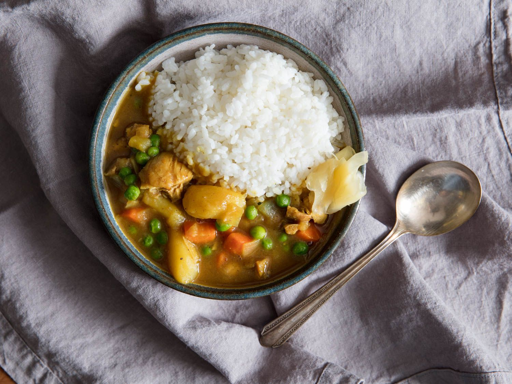

Instant Pot Japanese Curry

Description
Japanese curry varries enough from Thai or Indian curry to be its own dish. Making the curry in the Instant pot ensures that the texture is perfect, and the meat is tender and juicy. Always use the roux as a base and serve with rice.
Ingredients
- 1 1/2 tablespoons canola oil
- 1 onion, chopped
- 1 1/2 pounds beef, cut into 1/2-inch or 1-inch cubes
- 2 cloves garlic, minced
- 1 teaspoon grated fresh ginger
- 2 medium potatoes, peeled and cubed
- 2 carrpts, peeled and chopped into 1/2-inch pieces
- 1/4 teaspoon salt
- 1/4 teaspoon ground black pepper
- 2 1/2 cups beef broth
- 1 small apple grated
- 1 tablespoon ketchup
- 1 tablespoon soy sauce
- 1 (3.5 ounce) container japanese curry roux
Steps
- Turn on Instant Pot and select "Saute", heat the oil in the pot, add the onion and saute until almost translucent.
- Add beef, garlic, and ginger; saute until beef begins to brown.
- Mix in potatoes and carrots. Cook stirring constantly for 2 minutes. Season with salt and pepper.
- Pour beef broth, apple, ketchup and soy sauce into the pot. Break up the curry roux into blocks and place on top of the beef mixture. Do not mix the blocks into the broth.
- Turn "Saute" function off, lose and lock the lid, seal the valve, and set the instant pot to high pressure for 15 minutes. Allow 10-15 minutes for pressure to build.
- Allow the pressure to release naturally. This will take 10-40 minutes. Unlock and remove the lid and stir in the curry roux which will have melted over the top.